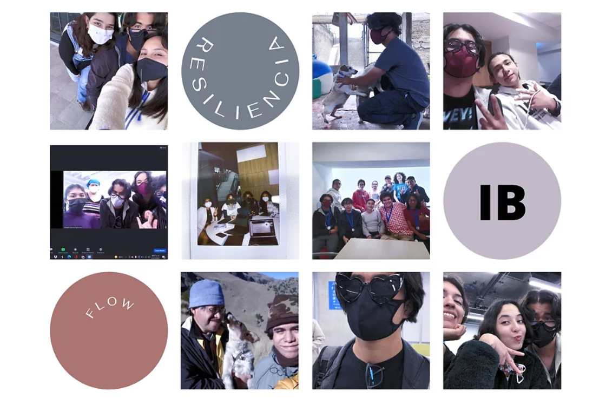

Semestre 4
---
"La vida pasa muy deprisa, si no te detienes a verla te la puedes perder"
Ferris Bueller, 1986
---

Documentos Finales
Reflexión Final
Analísis Objetivos CAS
---
Ain Bolaños Cortés - jqp983 - A01660732